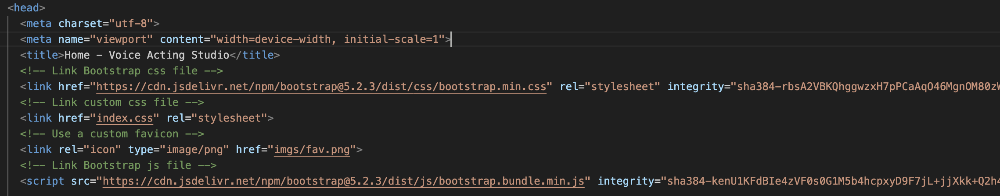
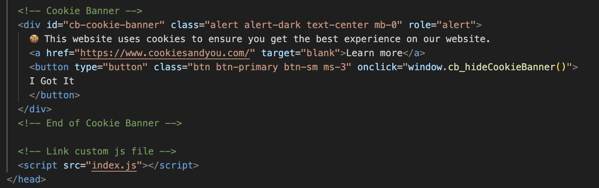
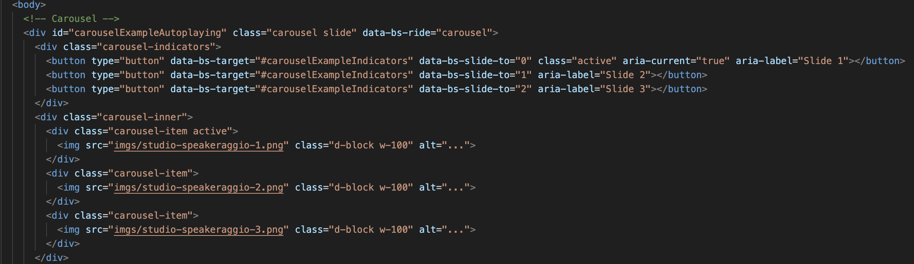
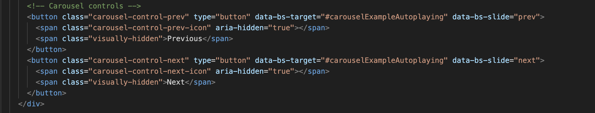
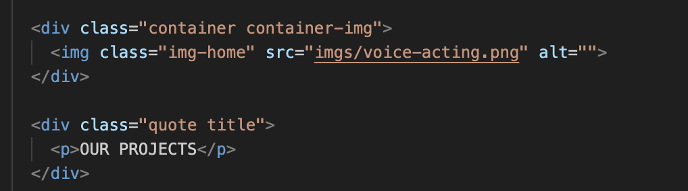
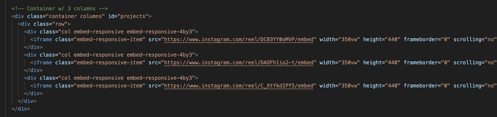
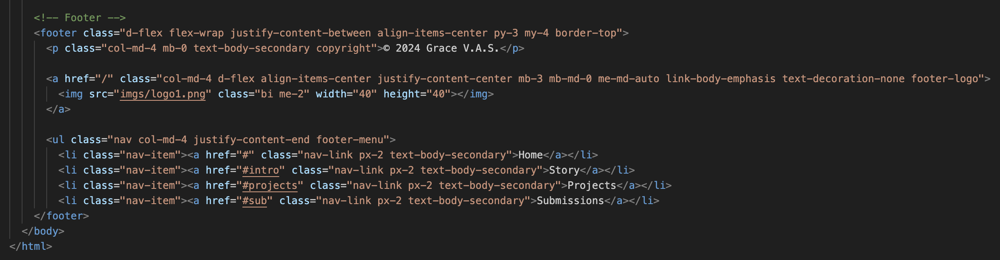

Website subject
The objective of this project is to create an engaging and
professional online platform for the “Grace Dubbing Studio.” The website
aims to showcase the studio’s expertise in voice acting and dubbing,
offering a space to promote its services, highlight ongoing projects,
and attract aspiring voice actors for training opportunities. With a
user-friendly interface and dynamic multimedia elements, the site
emphasizes the studio’s commitment to quality and its role in inspiring
the next generation of talent in the voice acting industry.
index.html:
This file serves as the backbone of the website. It defines the
website’s structure using HTML (HyperText Markup Language). It organizes
the content, such as text, images, forms, and navigation menus, into a
readable format for web browsers. HTML files are essential for defining
the skeleton of a web page, ensuring all elements are displayed
correctly.
index.css:
This file handles the visual styling of the website. CSS (Cascading
Style Sheets) controls the layout, colors, fonts, and other design
aspects. It allows for the separation of content (HTML) from
presentation, which makes the site easier to maintain and update while
improving the user experience.
index.js:
This JavaScript file adds interactivity to the website. It includes
functionality like the display and management of a cookie banner,
dynamic form behaviors, and responsive menu actions. JavaScript enables
a more interactive and dynamic user experience, which is vital for
modern websites.
init.php:
This PHP file is used to initialize server-side configurations or
database connections. PHP (Hypertext Preprocessor) allows for the
creation of dynamic content by interacting with databases, managing
sessions, or performing server-side logic. This is critical for features
like forms and user submissions. IT IS A PLACEHOLDER
Why do we need all these files?
- Separation of Concerns
- Scalability
- Enhanced User Experience
HTML 1

This HTML code creates the basic structure of a web page using
Bootstrap
- Page Title:
Home - Voice Art Studio
sets the name displayed in the browser tab.
- Bootstrap CSS: Links Bootstrap’s stylesheet to
style the webpage easily and make it look good.
- Custom CSS: A separate custom stylesheet
(index.css) allows for personalized styling.
- Favicon: Adds a small custom icon (imgs/fav.png)
visible next to the page title in the browser tab.
- Bootstrap JavaScript: Adds functionality like
dropdown menus or modals using Bootstrap’s JavaScript library.
HTML 2

This code creates a cookie banner for a website
- HTML Structure:
https://kolappannathan.github.io/bootstrap-cookie-banner/
- Button: A button is shown with the text “I Got It”.
When the button is clicked, it runs the JavaScript function
cb_hideCookieBanner() to hide the cookie banner.
- Styling: The banner uses Bootstrap classes like
alert, alert-dark, text-center for a styled alert box.
- JavaScript File: At the end, the file index.js is
linked to the page. It likely contains the cb_hideCookieBanner()
function that hides the banner when the button is clicked.
HTML 3

This code creates an image carousel (a slideshow) on a webpage using
Bootstrap
- Carousel Container: It’s wrapped in a div with the
ID carouselExampleAutoplaying. The data-bs-ride=“carousel” makes the
carousel slide automatically.
- Indicators (Navigation Dots): The button elements
at the top create small navigation dots. Each button corresponds to a
slide (Slide 1, Slide 2, Slide 3) and allows users to jump directly to
that slide.
- Slides: The carousel-inner container holds three
slides. Each slide is a div with the class carousel-item. First Slide:
Contains an image studio-speakeraggio-1.png and is marked as active (it
appears first). Second Slide: Displays the image
studio-speakeraggio-2.png. Third Slide: Displays the image
studio-speakeraggio-3.png.
- Image Display: Images are displayed in full width
(w-100) and are responsive to fit the screen (d-block).
- How It Works: The carousel automatically rotates
through the slides. Users can manually navigate using the dots
(indicators).
HTML 4

This code adds navigation controls (buttons) to a carousel
slideshow.
- Two Buttons: “Previous” button: Allows users to go
to the previous slide. “Next” button: Allows users to go to the next
slide.
- Attributes:
data-bs-target=“#carouselExampleAutoplaying”: Links the buttons to the
carousel with the ID carouselExampleAutoplaying. data-bs-slide=“prev”
and data-bs-slide=“next”: Specify whether the button moves to the
previous or next slide.
- Icons and Text: Each button includes an icon
(carousel-control-prev-icon or carousel-control-next-icon) to display
arrows. The “span class=”visually-hidden”>Previous span” and “span
class=”visually-hidden”>Next span” text are for screen readers to
improve accessibility.
HTML 5

This code creates a responsive navigation bar (navbar) using
Bootstrap
- Navbar Container: It has a dark theme
(data-bs-theme=“dark”) and a blue background (bg-primary).
- Brand Logo: A clickable logo is displayed with an
image (imgs/logo.png) and links to the home page (href=“#”).
- Navbar Toggler: A “hamburger menu” button appears
on smaller screens. When clicked, it expands or collapses the navigation
links.
- Navigation Links: A list of links is displayed:
Home (active by default). Story links to #intro. Projects links to
#projects. Submissions links to #sub.
- Responsive Behavior: The collapse class ensures
that the links are hidden on small screens and displayed only when the
“hamburger menu” button is clicked.
HTML 6

This code creates a 2-column layout with text on one side and an
embedded Instagram post on the other.
- Container Setup: A Bootstrap container (container
columns) groups all content. Inside it, a row divides the layout into
columns.
- First Column - Text Description: Contains a
paragraph (p) that introduces Graziana Pavone as a talented voice actor,
influencer, and entrepreneur.
- Second Column - Embedded Instagram Post: Uses an
iframe to embed an Instagram post. An iframe (short for inline frame) is
an HTML element used to embed another document, web page, video, or
other external content into the current webpage.
HTML 7

This code displays an image and a text heading on a webpage.
Container for the Image: The div with class
container container-img wraps the image. The img tag displays an image
located at imgs/voice-acting.png. It has the class img-home for styling
purposes.
Text Section: A div with the classes quote title
contains a paragraph. The p tag displays the text “OUR PROJECTS” in bold
or styled format.
HTML 8

This code creates a 3-column layout that embeds Instagram posts side
by side on a webpage.
- Container Setup: A container holds all the content
and is identified by id=“projects”. Inside it, there’s a row to organize
the columns.
- Three Columns: Each column (col) contains an
iframe. The iframe embeds an Instagram post using its src link.
- Attributes of the iframe: Embed-responsive-4by3:
Ensures the iframe maintains a 4:3 aspect ratio for responsiveness
(https://stackoverflow.com/questions/25228056/responsive-iframe-using-bootstrap)
This code creates a submission form that collects user information,
such as name, surname, email, mobile, and social details.
- Form Container: The form element has a class
submissions and an ID sub. It groups all the input fields and the submit
button.
- Input Fields: Name, Surname, E-mail, Mobile,
Social
- Submit Button: A button element styled with btn
btn-primary that shows the text “Submit”. Type=“button”: This button
does not submit the form by default; it would need JavaScript to handle
actions.
- How It Works: Users fill out the form fields (Name,
Surname, Email, etc.). The form is clean and styled using Bootstrap
classes (form-control and btn btn-primary). The submit button can be
used to trigger an action, such as sending the data or validating the
form. It is a placeholder because php has not been fully
implemented
HTML 10

This code creates a footer section for a webpage.
- Footer Container: The footer uses Bootstrap classes
like d-flex and flex-wrap to create a flexible and responsive layout.
The content is aligned horizontally and evenly spaced.
- Copyright Text
- Logo Link: A clickable logo is added using an a
tag. The logo image (imgs/logo1.png) is displayed at a size of 40x40
pixels.
- Navigation Links: Each link is styled using
Bootstrap classes like nav-link and text-body-secondary.